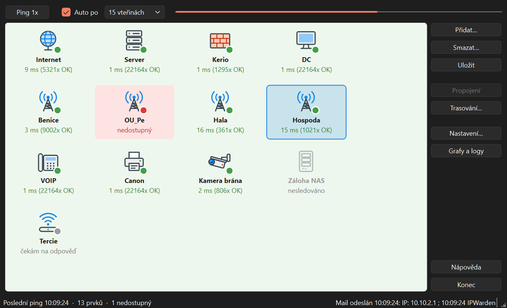
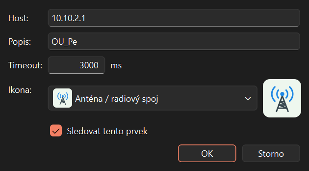
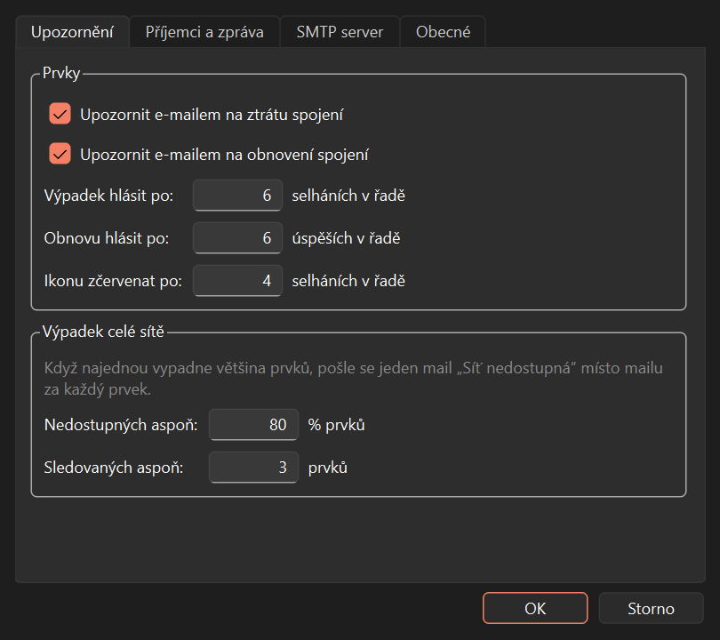
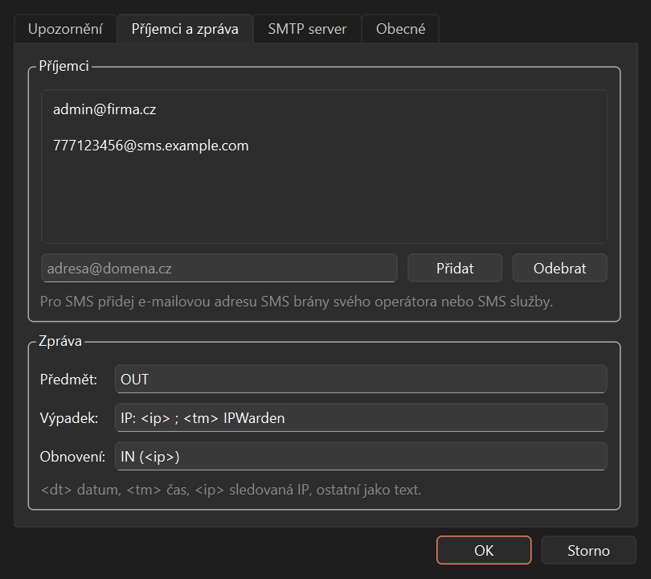
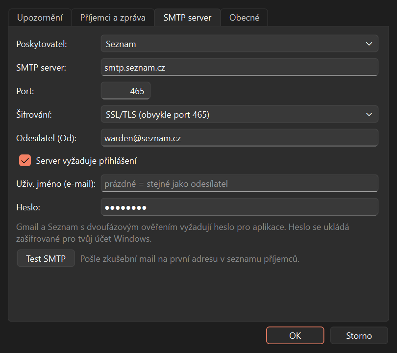
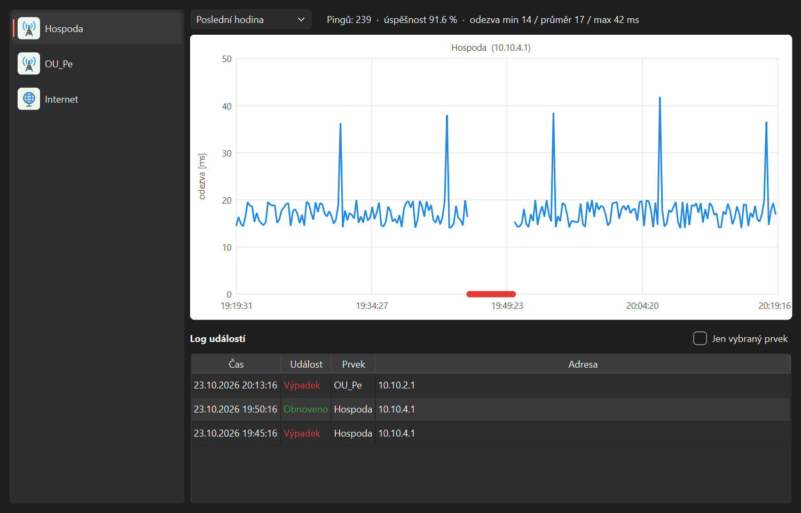
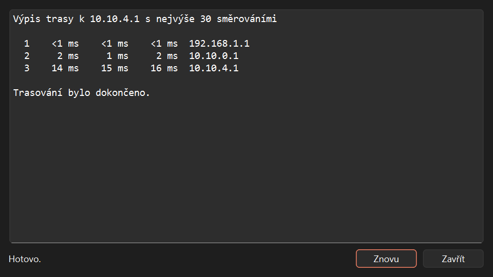
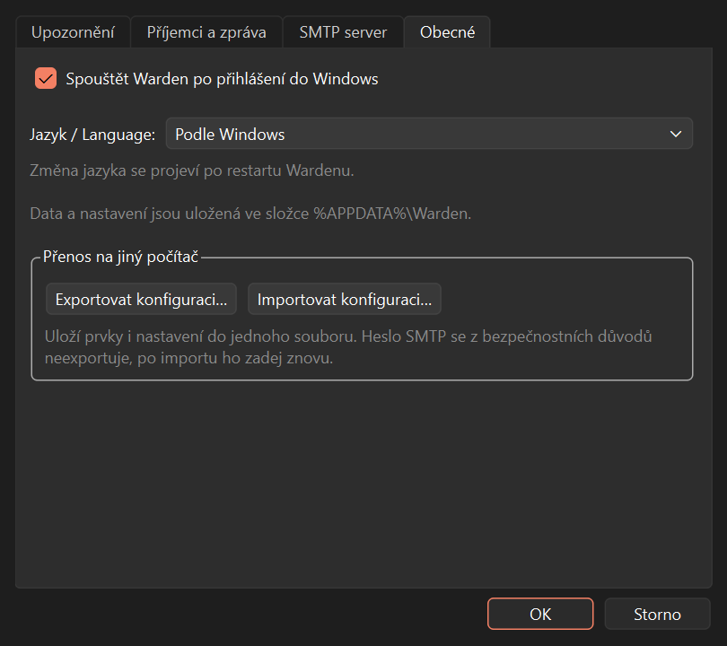

1. První spuštění
Spusť instalátor Warden-setup.exe a projdi průvodce. Na konci můžeš zaškrtnout, aby se Warden spouštěl
po přihlášení do Windows.
Po prvním spuštění je okno prázdné. Postup:
- Tlačítkem Přidat… přidej prvky, které chceš hlídat (kapitola 3).
- Klikni na Uložit.
- V Nastavení… vyplň e-mail pro upozornění a odesílací server (kapitoly 5 a 6) a vyzkoušej Test SMTP.
2. Hlavní okno

Co znamenají dlaždice
| Vzhled | Význam |
|---|---|
| zelená tečka, např. „15 ms (1021x OK)“ | Prvek odpovídá. Číslo v ms je odezva, „1021x OK“ je počet úspěšných pingů v řadě. |
| červená dlaždice, „nedostupný“ | Prvek neodpověděl několikrát za sebou (počet nastavíš v Nastavení). |
| šedá tečka, „čekám na odpověď“ | Prvek zatím neodpověděl, typicky hned po spuštění nebo po přidání. |
| vybledlá, „nesledováno“ | Prvek má vypnuté sledování a nepinguje se. |
Horní lišta
- Ping 1x pingne všechny prvky hned, bez čekání na interval.
- Auto po zapíná automatické pingání. V rozbalovacím seznamu vybereš interval (10 vteřin až 1 hodina).
- Pruh vpravo ukazuje, kolik zbývá do dalšího pingu. Když je plný, právě se pinguje.
Stavový řádek
Vlevo je čas posledního pingu a počet nedostupných prvků. Vpravo stav posledního e-mailu. Když se mail nepodaří odeslat, zobrazí se tam červeně důvod a Warden to zkusí znovu za minutu.
3. Přidání a úprava prvků

- Přidat… otevře dialog nového prvku. Dvojklik na dlaždici otevře úpravu existujícího.
- Host: IP adresa (
192.168.1.1) nebo jméno počítače (server.firma.cz). - Popis: název, který se ukáže na dlaždici a v logu, např. „Hospoda“.
- Timeout: jak dlouho čekat na odpověď. 3000 ms vyhovuje většině sítí, u pomalých radiových spojů dej víc.
- Ikona: jen pro přehlednost, na funkci nemá vliv.
- Sledovat tento prvek: když ho odškrtneš, prvek zůstane v seznamu, ale nepinguje se. Hodí se při plánované odstávce.
Prvek smažeš tak, že na něj klikneš a dáš Smazat… (nebo klávesu Delete).
4. Kdy přijde upozornění

Aby tě nezahltily maily kvůli jednomu ztracenému paketu, Warden čeká na několik selhání za sebou:
- Ikonu zčervenat po (výchozí 4): od kdy se dlaždice zobrazí jako nedostupná.
- Výpadek hlásit po (výchozí 6): kdy odejde mail o výpadku. Při 15s intervalu to je asi za 1,5 minuty.
- Obnovu hlásit po (výchozí 6): kolik úspěšných pingů za sebou je potřeba, než přijde mail „obnoveno“.
Mail o obnovení přijde jen za výpadek, o kterém ti předtím přišel mail. Čísla do polí jednoduše napiš.
Výpadek celé sítě
Když najednou vypadne většina prvků (výchozí 80 %), pravděpodobně spadl internet nebo tvoje vlastní síť. Místo desítek mailů přijde jeden: „Síť nedostupná“. Po obnovení sítě se nahlásí jen prvky, které zůstaly nedostupné.
5. Příjemci, zpráva a SMS

- Adresu napiš do pole a klikni na Přidat (nebo Enter). Příjemců může být víc.
- SMS: přidej e-mailovou adresu SMS brány svého operátora nebo SMS služby. Mail se pak doručí jako SMS.
- Text zprávy můžeš upravit. Značky se nahradí skutečnými hodnotami:
<dt>datum,<tm>čas,<ip>adresa prvku. VýchozíIP: <ip> ; <tm> IPWardenodpovídá původnímu programu IPWatch.
6. Nastavení odesílání (SMTP)

- V poli Poskytovatel vyber svou e-mailovou službu (Seznam, Gmail, Outlook). Server, port a šifrování se vyplní samy.
- Do Odesílatel (Od) napiš svou e-mailovou adresu.
- Uživ. jméno můžeš nechat prázdné, použije se adresa odesílatele.
- Vyplň Heslo a klikni na Test SMTP. Zkušební mail odejde na prvního příjemce ze seznamu.
Šifrování
Volby SSL/TLS a STARTTLS posílají heslo i zprávy šifrovaně. Při volbě Bez šifrování jde heslo po síti jako čitelný text. To je v pořádku jen pro poštovní server ve vlastní síti. Když server umí STARTTLS, Test SMTP ti to napíše a doporučí ho zapnout.
Heslo se ve Wardenu ukládá zašifrované pro tvůj účet Windows. Jiný uživatel ani jiný počítač ho nepřečte.
7. Grafy a logy

- Vlevo vyber prvek, nahoře období.
- Graf ukazuje odezvu v ms. Výpadky jsou červené body na spodní ose, čára je v tu dobu přerušená.
- Nahoře je souhrn: počet pingů, úspěšnost a nejnižší, průměrná a nejvyšší odezva.
- Log událostí obsahuje všechny výpadky a obnovení, i z minulých spuštění. Zaškrtni Jen vybraný prvek pro filtrování.
%APPDATA%\Warden\events.csv,
který otevřeš i v Excelu.8. Trasování

Klikni na prvek a dej Trasování…. Warden zobrazí cestu paketů až k prvku. Pomůže najít, kde přesně spojení přestává fungovat: poslední odpovídající adresa je místo, kde se cesta přerušila.
9. Přenos na jiný počítač

- Na původním počítači: Nastavení… → Obecné → Exportovat konfiguraci… a ulož soubor (např. na flash disk).
- Na novém počítači nainstaluj Warden a dej Importovat konfiguraci….
- Znovu zadej heslo SMTP v Nastavení → SMTP server. Z bezpečnostních důvodů se do souboru neukládá.
10. Spouštění s Windows a jazyk
- Spouštět Warden po přihlášení do Windows: Warden se spustí sám, takže hlídání nevypadne po restartu počítače.
- Jazyk: čeština nebo angličtina, výchozí podle Windows. Změna se projeví po restartu Wardenu.
- Warden může běžet jen jednou. Když ho spustíš podruhé, upozorní tě, že už běží.
11. Řešení problémů
| Problém | Co udělat |
|---|---|
| Nechodí maily | Podívej se do stavového řádku vpravo dole na důvod. V Nastavení použij Test SMTP, který chybu vysvětlí česky. |
| „Server odmítl jméno nebo heslo“ | Zkontroluj heslo. U Gmailu a u Seznamu s dvoufázovým ověřením použij heslo pro aplikace. |
| Přišel mail „…no valid MX record“ nebo o nedoručení | Odesílání funguje, ale adresa příjemce neexistuje. Oprav ji v seznamu příjemců. |
| Všechny prvky jsou najednou červené | Pravděpodobně nefunguje síť nebo internet u tebe. Přijde jeden mail „Síť nedostupná“. |
| Prvek je pořád „čekám na odpověď“ | Prvek na ping neodpovídá. Zkontroluj adresu a to, jestli zařízení nebo jeho firewall ping nepovoluje. |
| Kde jsou data? | Ve složce %APPDATA%\Warden (napiš do adresního řádku Průzkumníka). Najdeš tam seznam prvků, nastavení a log. |